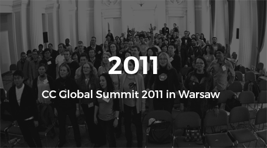
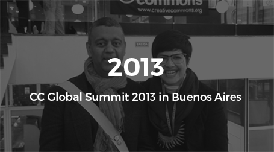

"Hello! Sharing world"
CREATIVE COMMONS
CREATIVE COMMONS
GLOBAL SUMMIT 2015
The Global Summit brings together the community of
experts, academics, and activists who comprise the Creative
Commons affiliate network in a different country every two.
This year, we hope to expand our invitation list including
organizations and individuals.
Please contact us per Email for any further questions
about CC Global Summit 2015!
Creative Commons
Global Summit 2015 Logo
The logo of CC Global Summit 2015 was decided
through the logo competition from 8.June to 7.July.
See the past CC Global Summits
Take a look at the last two CC Global Summits wich took place
in Buenos Aires and in Warsaw.

